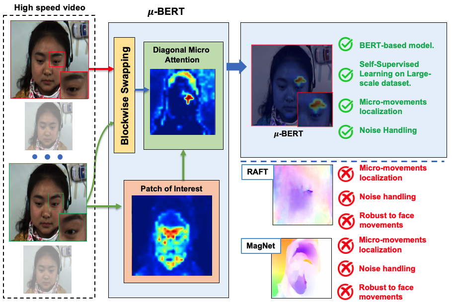
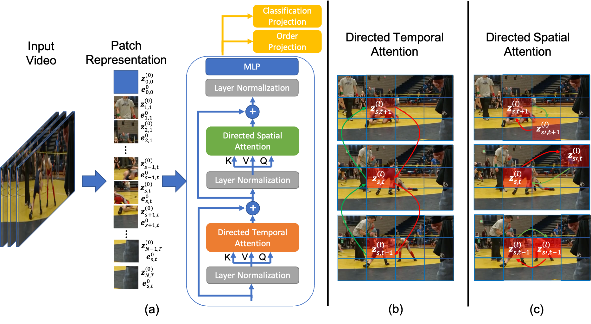
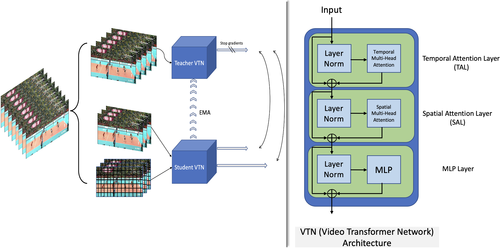
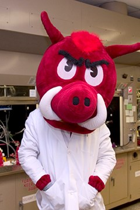
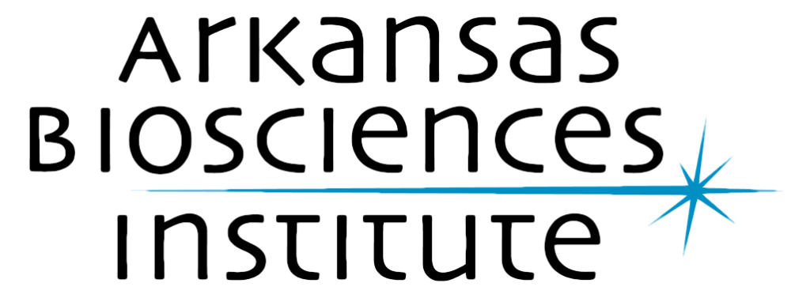

Our Solution
Our CVIU Lab focuses on four major technologies for smart health:1. Facial Expression Techonolgy. We aim to build a robust model to accuratelty identify the micro facial expression.
2. Early Autism Detection We aim to build the AI model to early recognize autism of children.
3. Human Behavior Analysis. We aim to build the AI model that can monitor the human behavior.
4. Neural Cell Analysis. We aim to build the AI model that can monitor the development of neural cells.
|  |  |  |
Our Team

|

|

|

|
 | ||
| Dr. Khoa Luu | Dr. Han-Seok Seo | Dr. Min Zou | Xuan Bac Nguyen | Thanh Dat Truong | Naga Venkata Sai Raviteja Chappa | Manuel Serna-Aguilera |
| Assistant Professor | Associate Professor | Distinguished Professor | Ph.D. Candidate | Ph.D. Student | Ph.D. Candidate | Ph.D. Student |
| khoaluu@uark.edu | hanseok@uark.edu | mzou@uark.edu | xnguyen@uark.edu | tt032@uark.edu | nchappa@uark.edu | mserna@uark.edu |
Publication
[1] Xuan-Bac Nguyen, Chi Nhan Duong, Xin Li, Susan Gauch, Han-Seok Seo, and Khoa Luu (2023). Micron-BERT: BERT-based Facial Micro-Expression Recognition. In Proceedings of the IEEE/CVF Conference on Computer Vision and Pattern Recognition (CVPR), 2023.
[2] Manuel Serna-Aguilera, Khoa Luu, Nathaniel Harris, and Min Zou (2023). Neural Cell Video Synthesis via Optical-Flow Diffusion. arXiv, 2023.
[3] Naga VS Chappa, Pha Nguyen, Alexander H. Nelson, Han-Seok Seo, Xin Li, Page Daniel Dobbs, and Khoa Luu (2023). Group Activity Recognition using Self-supervised Approach of Spatiotemporal Transformers. arXiv, 2023.
[4] Thanh-Dat Truong, Quoc-Huy Bui, Chi Nhan Duong, Han-Seok Seo, Son Lam Phung, Xin Li, and Khoa Luu (2022). DirecFormer: A Directed Attention in Transformer Approach to Robust Action Recognition. In Proceedings of the IEEE/CVF Conference on Computer Vision and Pattern Recognition (CVPR), 2022.
Sponsors

|

|
 |